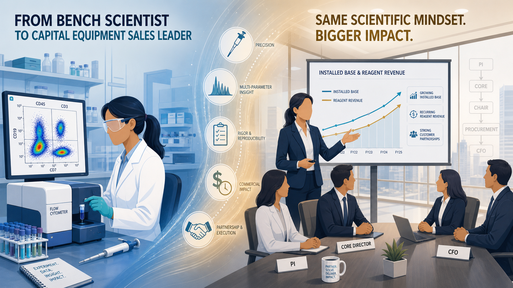

When I made the transition from R&D scientist to capital equipment sales, a lot of people — including me — weren't sure it would work. Scientists are trained to be precise, methodical, and skeptical. Sales, by popular caricature, is the opposite: fast-talking, relationship-driven, move fast and close faster.
Seven years later, I'm a successful commercial leader managing a multi-million dollar regional ecosystem. And I'll tell you plainly: the seven years I spent at the bench are the single biggest reason I've been able to do this. Not despite my science background. Because of it.
Here's what the bench taught me about selling capital equipment — and why I think life sciences companies are fundamentally undervaluing science-trained commercial talent.
You Understand the Problem Before You Pitch the Solution
Most sales training is built around a simple framework: understand the customer's pain point, then position your product as the solution. It sounds obvious, but the gap between knowing the framework and actually executing it is enormous — and it's almost entirely determined by how deeply you understand the customer's world.
When a Core Facility Director at an academic medical center tells me their 12-color panel is maxed out and they're losing data resolution, I don't have to ask three follow-up questions to understand what they mean. I know what that looks like. I've sat in front of a cytometer trying to resolve overlapping emission spectra with software compensation that was never going to get you there. I know the frustration. I know what it costs in time, in grant deliverables, in publications delayed.
That shared understanding changes the entire dynamic of the conversation. It moves you from vendor to peer — and that matters enormously in a market where the purchasing decision involves PhDs who have spent decades developing technical intuition and are deeply suspicious of people who don't.
"The fastest way to lose a scientist's trust is to oversimplify their problem. The fastest way to earn it is to show them you actually understand it."
You Know When the Product Is Actually the Right Fit — and When It Isn't
This one might be controversial, but I'll say it: one of the most valuable things my R&D background gave me was the ability to walk away from a deal that wasn't right.
In my years at the bench, I evaluated dozens of instruments. I know what good workflow integration looks like. I know the difference between a product that will genuinely solve a problem and one that will create new ones the customer hasn't anticipated yet. And I know that a customer who buys the wrong solution — even at a great price — is a lost account three years later.
Science-trained commercial people are more willing to say: "Actually, given what you've told me about your throughput requirements and your panel complexity, I want to make sure we're looking at the right configuration before we go further." That moment of intellectual honesty — that willingness to pump the brakes — is often the thing that converts a skeptical customer into a long-term partner.
Quota pressure can work against this instinct. The discipline is staying true to it anyway.
You Can Navigate the Full Decision-Making Hierarchy
Capital equipment decisions in research institutions don't happen in a straight line. There's the PI who wants the instrument. There's the Core Facility Director who manages utilization and maintenance. There's the Department Chair who controls the budget. There's the procurement office with its own process. And in biopharma, you add regulatory affairs, IT, and finance to the mix.
A sales professional who only knows how to talk to procurement is going to lose these deals to someone who can walk into the PI's lab and have a genuine scientific conversation — and then walk upstairs to the CFO's office and translate the same instrument into an ROI calculation.
Seven years at the bench gave me the credibility to be in that first conversation. The commercial skills I've built since gave me the fluency to be in the second. That combination — both technical and commercial — is what I believe separates good life sciences sellers from exceptional ones.
You Ask Better Questions Because You've Lived the Answers
Consultative selling is built on asking great questions. But the quality of your questions is entirely dependent on the depth of your understanding. You can't ask a probing question about a workflow problem you've never experienced.
When I'm doing discovery with a biopharma customer, I'm not running through a qualification checklist. I'm asking things like: "Are you running GMP-compliant workflows, and have you mapped your audit trail requirements to the instrument's data output?" or "Is your team designing panels from scratch or are you adapting published protocols — because that changes how we'd think about the configuration." Those aren't questions that come from a sales training manual. They come from having done this work.
The best discovery conversations I've had didn't feel like sales calls. They felt like consulting sessions where I happened to have a solution at the end of the conversation.
The One Thing the Bench Doesn't Teach You
I'll be honest about the other side of this. The bench teaches precision, rigor, and patience. It does not naturally teach urgency, pipeline management, or the ability to advance a deal that has gone quiet.
The hardest adjustment I made in my transition to commercial roles wasn't the science — it was learning to be comfortable with ambiguity and forward momentum at the same time. Scientists are trained to gather all available data before drawing a conclusion. Sales requires you to move forward with the data you have.
The synthesis — staying scientifically rigorous about customer needs while commercially disciplined about execution — is the skill that takes time to build. But once you have it, it is genuinely difficult for competitors without a scientific background to match.
Final Thoughts
If you're a scientist considering a move into commercial roles, my honest advice is: your background is not a liability. It is a differentiated asset — in a market full of talented salespeople, the ones with real scientific depth stand out immediately to customers who live and breathe this work every day.
And if you're a hiring manager in life sciences: consider what you're optimizing for. The fastest path to a signed deal is not always the fastest path to a retained customer. Science-trained commercial leaders close deals, retain accounts, and build the kind of long-term platform relationships that compound over years. That's the business case — and in a market where the instruments last a decade and the reagent revenue follows the installed base, it matters.